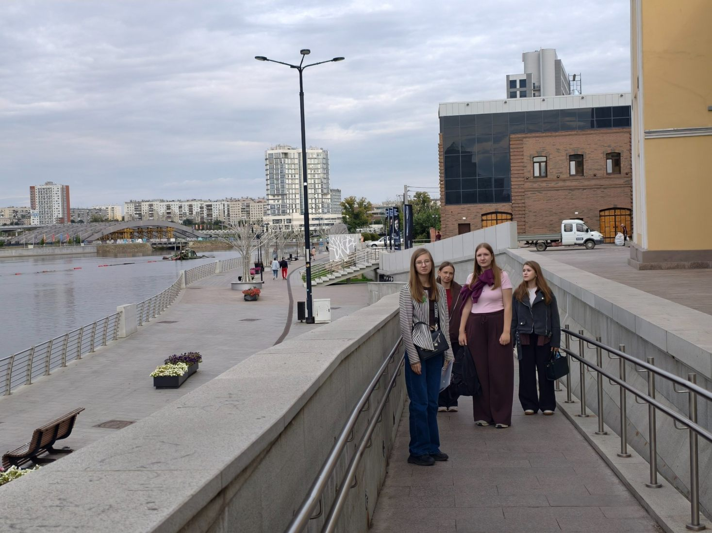
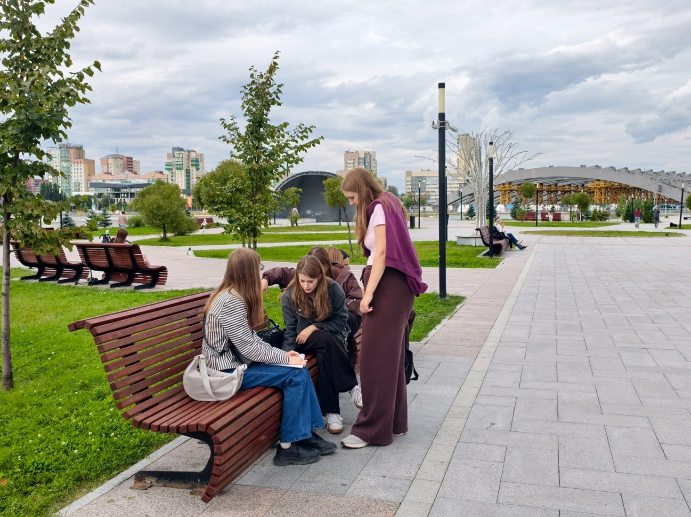
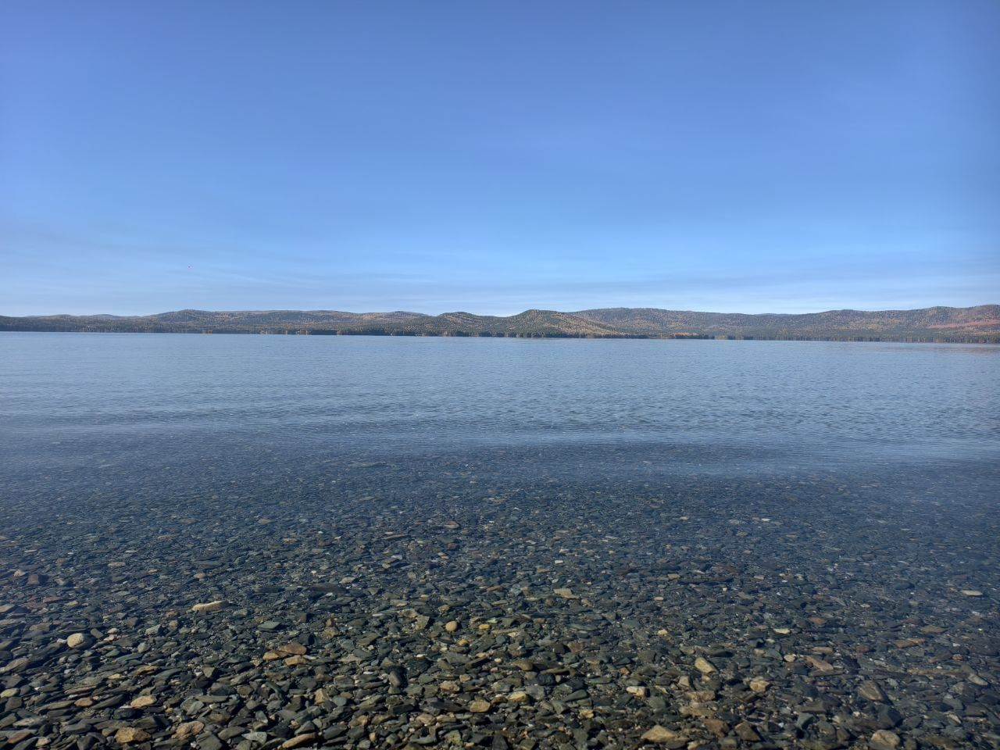
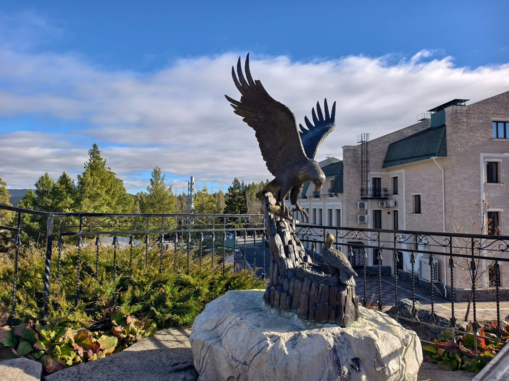

Челябинск
Городские прогулки, парки, музеи и общественные пространства.
Открывайте Южный Урал в своём темпе. Узнавайте об условиях посещения туристических объектов и самостоятельно выбирайте места для поездки.
«Открытый Южный Урал» — бесплатный информационный ресурс для самостоятельного планирования путешествий по Челябинской области с учётом условий доступности туристических объектов.
Проект разработан студентами Челябинского государственного университета совместно с Главным управлением координации развития туризма в Челябинской области. Основой каталога стали наблюдения студентов во время выездов в Челябинск, Миасс и Златоуст.
Ресурс может быть полезен людям с инвалидностью, маломобильным путешественникам, пожилым людям, семьям с детскими колясками и всем, кому важно заранее знать об особенностях маршрута.

Работа студенческой команды в Челябинской области
Городские прогулки, парки, музеи и общественные пространства.

Природные ландшафты, городские пространства и озеро Тургояк.

Горные виды, культурные объекты и места для прогулок.
Откройте Челябинск, Миасс или Златоуст либо посмотрите все объекты.
Используйте фильтры и проверяйте характеристики в карточках мест.
Перед поездкой свяжитесь с объектом и проверьте актуальность условий.
Предварительные наблюдения студентов. Информация не является профессиональной экспертизой доступности. Перед поездкой уточняйте актуальные условия у объекта.